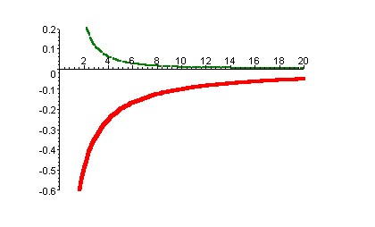

Electronegative atoms attract electrons more than electropositive atoms. This gives rise to uneven charge distribution in the molecule, the most common ways to represent charge distribution as point charges localised in the molecule. We then use coloumb's potential for point charges to estimate the forces between charged portions and uncharged portions.

The coulomb potential is an effective pair potential is an effective pair potential that describes the interactions between the two point charges. This acts along the line connecting two charges. This is given by the following equation:

r - distance between the two point charges.
q1, q2 are electric charges in coloumbs carried by charge1 and charge2. ε0 - electrical permittivity of the space.
Two opposite charge particles gives an attractive potential, whereas if charge on the both particles is same it leads an repulsive potential. The resulting potential is as shown in the figure below:

This plot shows the variation of coulomb potential with distance in nanometers. The bottom part represents potential between opposite charge i.e., attractive potential, the top part in the figure represents the potential between like charges i.e., repulsive.
Electrostatic potential decays slowly with distance.

To demonstrate the electrostatic potential between molecules.


| STEP 1:Click on 'start to start the experiment. |
 |
| Step 2: The charge on the both the particles can be varied by varying the position of the slider. |
 |
| Step 3: The coordinates of particles can be changed by changing the position of slider, a plot of force, energy is seen. |
 |


P.W Atkins "Physical chemistry"
Intermolecular forces by Jacob N.Israelachvili
Jurij Kotar âOptical Tweezersâ ,University of Cambridge, Cavendish Laboratory, Biological and Soft Systems.
Royer, Donald J. Bonding Theory. New York, NY.:McGraw-Hil
http://ww2.chemistry.gatech.edu/~lw26/structure/molecular_interactions/mol_int.html#B
http://www.pumma.nl/index.php/Theory/Potentials#Electrostatic
http://www.physics.uoguelph.ca/tutorials/shm/Q.shm.html